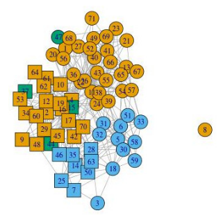
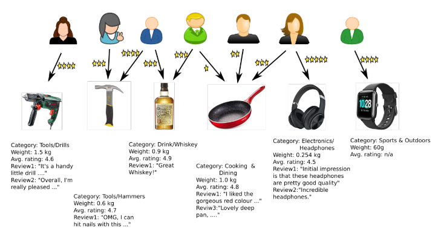
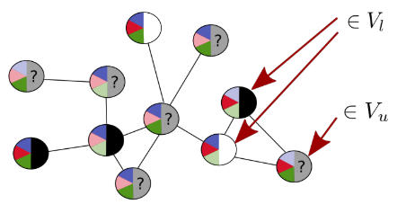
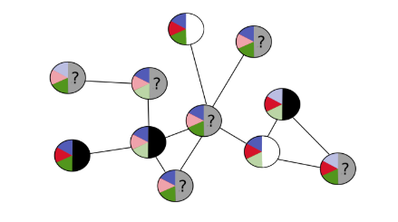
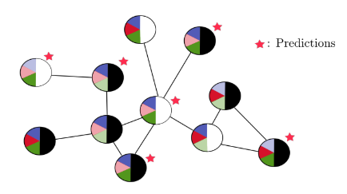
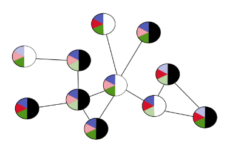
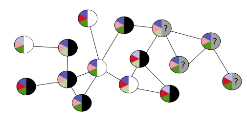
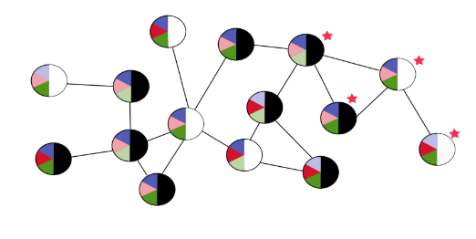
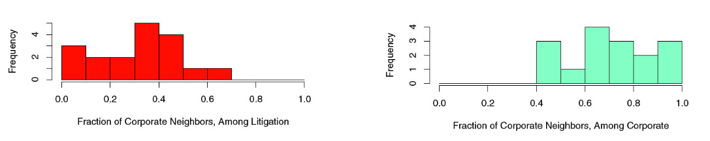

Node Classification¶
Node Classification¶
Things we can (try to) predict in networks:
Node Classification
- Is a user in a social network going to vote democrat or republican?
- Is a sensor in a sensor network going to fail within the next 30 days?
- Has a computer in a computer network been hacked?
- Is a poster a person or a robot?
Link Prediction
- Are two proteins interacting?
- Will customer A buy product B?
- Is user A going to become a follower of user B?
Network Classification
- Is a molecule a mutagen?
We focus on node classification now.
Node Attributes¶
Graph with node attributes:
where \bold A = (A_1, \dots, A_m) are node attributes
Example - Lazega Lawyers

Attributes:
- A_1: status ∈ { partner, associate }
- A_2: gender ∈ { male, female }
- A_3: office ∈ { Boston, Hartford, Providence }
- A_4: years with firm ∈ \R
- A_5: age ∈ \R
- A_6: practice ∈ { litigation, corporate }
- A_7: law school ∈ { Harvard, Yale, Ucon, Other }
Example - User-Product Network

Attributes
- A_1: type ∈ { user, product }
- A_2: gender ∈ { male, female }
- A_3: category ∈ { Tools, Cooking, Drink, . . . }
- A_4: weight ∈ \R
- A_5: avg. rating ∈ \R
- A_6: reviews ∈ text∗
- All reviews as a sequence of text
Class Label¶
Not all attributes have known values for all nodes. One incompletely known attribute is the designated class label Y. We can write:
with
- V_l: the labeled nodes (value of Y known)
- V_u: the unlabeled nodes (value of Y unknown)
We want to predict the value of Y for the unlabeled nodes.
Schematic picture:

- Attributes: blue,red,green ∈ { light,dark }
- Class: Y ∈ { white, black }
Transductive vs Inductive¶
Transductive¶

- The graph ((V_l, V_u), E, \bold A, Y) is fixed, and the same when learning and predicting
- all nodes V_u that need to be classified already known when learning the classifier
- Examples: techniques based on matrix factorization

Inductive¶

- Graph G = ((V_l, V_u), E, \bold A, Y) used for training (possibly V_u = ∅, as in figure).
- Nodes that are classified can be new nodes added to G, or even nodes in a different graph G'


Independent vs Collective¶
Independent Classification
- The classification of v \in V_u is independent of the classification of other nodes v' \in V_u
- This corresponds to the standard classification scenario in machine learning
Collective Classification
- All nodes in V_u are classified jointly: the classification of v \in V_u may depend on the classification of v' \in V_u
- Specific for classification in network (or other "inter-connected") data
Homophily¶
Homophily, also known informally as “birds of a feather”, is when a link between individuals (such as friendship or other social connection) is correlated with those individuals being similar in nature. For example, friends often tend to be similar in characteristics like age, social background, and education level.
[S. Bhagat, G. Cormode, S. Muthukrishnan: Node Classification in Social Networks]
Mechanisms leading to homophily:
- Social influence: This indicates that people tend to follow the behaviors of their friends. The social influence effect leads people to adopt behaviors exhibited by their neighbors
- Selection: This indicates that people tend to create relationships with other people who are already similar to them;
- Confounding variables: Other unknown variables exist, which may cause friends to behave similarly with one another.
[J. Sun and J. Tang: A Survey of Models and Algorithms for Social Influence Analysis]
Homophily in Lazega Network¶
Collaborating lawyers are more likely to have the same Practice:

Image from: E.D. Kolaczyk: Statistical Analysis of Network Data
Prediction
only makes 5/34 errors assuming that when predicting Practice(i), the Practice of all other nodes j is known.
- Class memberships of nodes u ∈ V_l can be a strong predictor for class membership of v ∈ V_u
Independent Classification¶
A generic approach¶
- Define a set of node features X_1, \dots , X_k
- For each node v \in V_l, construct the training example
- (\bold X(v), Y(v)) = (X_1(v), \dots, X_k(v), Y(v))
- Use standard machine learning approach to lean a classifier from the training examples.
- For nodes u \in V_u: calculate feature vector \bold X(u), and predict Y(u)
Essentially inductive, but could also be used in a transductive situation.
Node feature constructions¶
Some ways to construct node features:
- X(v)=A(v) with A a node attribute.
- E.g. X = location
- X(v) = d(v) (in/out degree)
- X(v) = aggr\{A(u) \mid u: (v,u) \in E\}
- Aggregate of attribute values of linked nodes.
- E.g. Most frequent practice type among collaborating colleagues (aggr=mode); average age of collaborating colleagues (aggr=average)
- X(v): Boolean function for a property of graph neigborhood
- E.g. At most 2 friendship links away, there is a node u with location(u)=\text{Hartford}
- X(v)= PageRank(v) (in transductive setting)
- X(v) = coefficient of v in vectors of SVD (in transductive setting)
- ... infinitely many possibilities!
Some node attributes may be unknown (especially class label). This may lead to undefined or inaccurate feature values.
Collective Classification¶
Nodes with class label black or white (no further attributes):

- Looking only at node a, predict it to be black or white?
- Looking only at node b, predict it to be black or white?
- Looking at all unlabeled nodes together, which color to predict?
Iterative Independent Classification¶
We assume a transductive scenario
Given
- ((V_l, V_u), \bold A, Y): \bold A observed for all nodes, class label Y observed for nodes in V_l
- Set of node features \bold X_i
- May include features dependent on Y
- Classifier for predicting Y(v) given \bold X(v)

- We use \hat Y(v) to denote the predicted value for the true but unknown value Y(v)\quad (v\in V_u)
- The iterative method only makes sense if the features \bold X(v) include features dependent on labels Y(u) for some nodes u \neq v
Example¶
- \bold E = (Collaborate),\quad \bold A = \empty,\quad Y = Practice
- X(v): fraction of v's neighbors with Practice=corporate (undefined if Practice unknown for all neighbors).
- Prediction model

\color{darkblue} \text{Blue}: Practice=corporate,
\color{darkgreen}\text{Green}: Practice=litigation
White: Practice=?,
Red border: node in V_u.


Adding Learning to the Loop¶
Given
- ((V_l, V_u), \bold A, Y): \bold A observed for all nodes, class label Y observed for nodes in V_l
- Set of node features \bold X_i.
- May include features dependent on Y
- Learnable prediction model for class Y(v) given \bold X(v)

Example
Example on slides 10.7
Label Propagation¶
Similar to iterative independent classification based on neighbor majority vote.
Difference:
- maintain predictions as probability distribution over all class label values
Probability distribution over labels for unlabeled nodes:

[S. Bhagat, G. Cormode, S. Muthukrishnan: Node Classification in Social Networks, in: C.C. Aggarwal Ed.: Social Network Data Analytics, 2011.]
[S.A. Macskassy, F. Provost: A Simple Relational Classifier. Workshop on Multi-Relational Data Mining (MRDM-2003)]
Algorithm¶
Choose indexing where V_l = \{1, \dots, n_0\} and V_u=\{n_0+1, \dots, n\}
Define n_0 \times k label matrix Y_l:
Iterative Formulation
For each node v \in V_u, maintain a probability distribution Q(v) over the set \mathcal y = {y_1, \dots, y_k} of different possible class label values Y(v):
- Q^0(v) = \frac {1} {|V_l|} \sum_{u\in V_l} Y_l[u, \bullet] ("class prior")
- Iteratively update Q(v):
N_v: set of graph neighbors of v.
- Prediction: most probable label according to Q^\infty(v) (assuming convergence)
Example
Example on slides 10.10
Random Walk¶
Define a random walk on the graph:
- from any unlabeled node, randomly chose a neighbor
- at labeled nodes: stay at node with probability 1 (labeled nodes are sink nodes) .
The transition matrix then can be written as:
where
- l is n_0 \times n_0 identity matrix
- P_{ul} is (n-n_0) \times n_0
- P_{uu} is (n-n_0) \times (n-n_0)
k-step transition probabilities: P^k = P \cdot P^{k-1} in the limit:
Assuming that from every unlabeled node, a labeled node is reachable: P^\infty_{uu}=0
For P^\infty_{ul} we have: $$ P^\infty_{ul} = P_{ul} + P_{uu}P_{ul}^\infty \Rightarrow P_{ul}^\infty = (1- P_{uu})^{-1}P_{ul} $$
From Random Walk to Label Distribution¶
The P_{ul}^\infty distribution defines a (probabilistic) labeling of the unlabeled nodes $$ Q^{RW} = P_{ul}^\infty \cdot Y_l $$ where Q^{RW} is a (n-n_0) \times k matrix
- Q^{RW}[h,j] = probability that random walk started at unlabeled node n_0 + h ends at labeled node with label y_j.
Example¶

Equivalence¶
The iterative and random walk distributions are the same: $$ Q^\infty = Q^{RW} $$ This can be seen as follows: $$ \begin{align} Q^\infty &= P_{ul}Y_l + P_{uu}Q^\infty \ &= P_{ul}Y_l + P_{uu}P_{ul}Y_l + P^2{uu} Q^\infty \ &\vdots \ &= \Sigma^\infty_{i=0} P^i_{uu} P_{ul} Y_l + P_{uu}^\infty Q^\infty \ &= \Sigma^\infty_{i=0} P^i_{uu} P_{ul} Y_l \ &= P^\infty_{ul} Y_l \ &= Q^{RW} \end{align} $$
Word Embeddings¶
Embeddings so far:
- Texts \to vector space model (observable features: tf, idf)
- User/products:
- \to (product) feature space
- \to latent space (latent features: SVD)
- (Social) network nodes \to latent space (SVD)
Embeddings to come:
- Word embeddings: word2vec
- Node embeddings: node2vec
Literature: Mikolov, Tomas, et al. "Distributed representations of words and phrases and their compositionality." Advances in neural information processing systems. 2013.
A word embedding maps the words of a vocabulary (or dictionary) into n-dimensional space of reals:
E.g. n=100 or n=1000
Goal: embedding encodes semantic meanings and relationships and supports multiple applications in natural language processing.
Example¶
2-d projection of 1000 dimensional embeddings of countries and capitals:

Source: [Mikolov et al., 2013]
Application for analogical reasoning: to answer “Berlin is for Germany what ??? is for France”, compute:
and find the nearest word to this vector